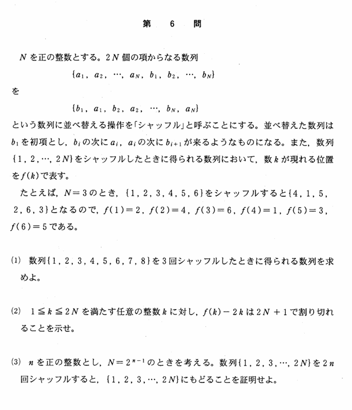

2002年 第6問
論証

分析
(3)が思考力を問う難問である。誘導を念頭に常に置きながら実験を行うことによる規則性の発見を要求される。ひらめきの要素は大きいが、数学的帰納法で厳密に示すことに心がける必要がある。
与えられた$\ f(k)\ $が何に何を対応させる関数であるのかを明確にすることが重要である。対応を関数と捉えることで関数の合成の考え方を利用し問題を扱いやすくするという発想は1998年理系第5問、文系第3問にもある。
誘導
とてもきれいな誘導である。
まず、(1)でN=4のときを実験させている。これは(3)におけるn=3のときに当たり、(3)を解くときに、この結果を用いて考えればよいように設定されている。より有用な値での実験をさせることによって受験者の自然な解法の誘導をするという意図があるのかもしれない。
(2)では、一見意味のなさそうなことを示させている。しかし、これは意味が大ありであり、この意味を考えることがこの問題の醍醐味と言えるほどである。一応(1),(2)のみを解くのは容易である。
そして主題である(3)では、いきなり一般化されたものの議論を要求される。(2)の意味を考えながら(1)の実験を眺めてみると、2N+1で割った余り、(1)の例では9で割った余りという発想を持って実験したものを眺めてみると
項1に注目してみると、0,1,2,3回目のシャッフルで1,2,4,8となっていることから、m回のシャッフルでの項1の位置は、mが0以上3以下の整数のとき$\ 2^m\ $項目である。ここで、9で割った余りという発想を組み合わせると、m回後の項kの位置を$\ f_m(k) \ $と表すことにすると、2N+1を法として
$$f_m(1)\equiv 2^m$$
であるという仮説が立ち、これは実際に成り立つ。ここからさらに一般化することを考えて、$$f_m(k)\equiv 2^m k$$という仮説が立てられ、これは実際に成り立つことから、解法が見える。
一方、(2)の$\ f(k)-2k \ $の形に注目して、これをうまく2N+1で割り切れるようにm回のシャッフルに対しても一般化できないかを考えることで$$f_m(k)-2^mk\equiv 0$$という仮説を立てるという発想もある。
このような誘導は、ひらめき要素は少なからずあるが、誘導を基に思考する力が非常に良く問うことができている。
なお$\ f_{m+1}(k)=f(f_m(k))\ $であることも(2)の$\ f(k)\ $の意味を考える上で発見しなければならない。一見意味が分からないものでもその意味を深ぼって考えることの重要性を教えてくれる。
背景
とても面白い背景がある。
まず1つ目は、項の入れ替えを行っていると考えてみれば、入れ替えを行列によって表せることである。
奇数2i-1列目(iはN以下の自然数)にはN+i行目に1、偶数2j列目(jはN以下の自然数)にはj行目に1、それ以外の成分は全て0の行列を$\ A_N\ $とする。例えば
$$A_2=\begin{pmatrix} 0 & 0 & 1 & 0\\ 1 & 0 & 0 & 0\\ 0 & 0 & 0 & 1\\ 0 & 1 & 0 & 0 \end{pmatrix}$$$$A_4=\begin{pmatrix} 0 & 0 & 0 & 0 & 1 & 0 & 0 & 0\\ 1 & 0 & 0 & 0 & 0 & 0 & 0 & 0\\ 0 & 0 & 0 & 0 & 0 & 1 & 0 & 0\\ 0 & 1 & 0 & 0 & 0 & 0 & 0 & 0\\ 0 & 0 & 0 & 0 & 0 & 0 & 1 & 0\\ 0 & 0 & 1 & 0 & 0 & 0 & 0 & 0\\ 0 & 0 & 0 & 0 & 0 & 0 & 0 & 1\\ 0 & 0 & 0 & 1 & 0 & 0 & 0 & 0 \end{pmatrix}$$である。そして、m回後の操作の後の数列は$$A^m×\begin{pmatrix} 1\\ 2\\ 3\\ \vdots\\ 2N \end{pmatrix}$$を計算した2N行1列の行列を上から並べたものである。(3)で示していることは、Iを$\ 2^n\ $次の正方行列として$$ {A_{2^{n-1}}}^{2n} =I $$であるということである。
2つ目の背景は、あみだくじに対応できることである。項を入れ替えるという動作はあみだくじに対応させることができる。2N個の文字を1回シャッフルするあみだくじが作れれば、それを下にm個つなげて、m回シャッフルできるあみだくじがつくれる。
2N個の文字を1回シャッフルするあみだくじは、N段あり、i段目がi～2N-i+1の間に1個おきに、「iとi+1の間」「i+2とi+3の間」...「2N-iと2N-i+1」というようにN-i+1本の線を引いている状態のあみだくじである。このあみだくじをあみだくじCとすると、この問題の(3)では$\ N=2^{n-1}\ $のとき、あみだくじCを下に2n回同じものをつなげたあみだくじは、全く同じ位置に戻るあみだくじであるということを示している。